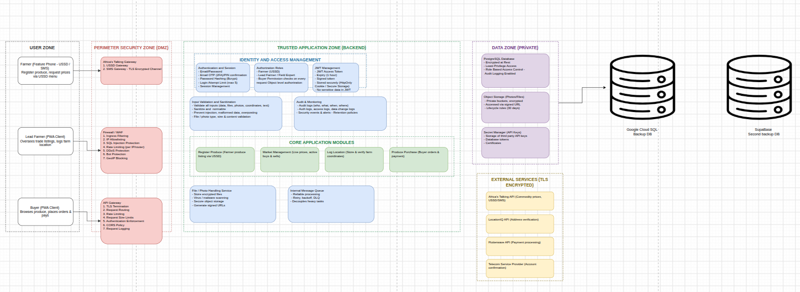

FikaMarket Security Architecture
1. Security Posture
FikaMarket uses a layered security approach to protect users, applications, data, and external services.
User Zone
↓
Perimeter Security
↓
Trusted Application Zone
↓
Data Zone
↕
External Services
The backend acts as the main security layer between users, the database, and external services.
2. Data Classification
FikaMarket handles user, produce, order, payment, location, and authentication data.
Sensitive information such as passwords and authentication tokens requires additional protection.
Passwords are hashed using bcrypt before being stored:
def hash_password(password: str) -> str:
pw = password.encode("utf-8")[:72]
return bcrypt.hashpw(pw, bcrypt.gensalt()).decode("utf-8")
The system never needs to store the user's original password.
3. Network Security
Incoming requests are expected to pass through the security perimeter before reaching the FikaMarket API.
User
↓
Firewall / WAF
↓
API Gateway
↓
FikaMarket API
↓
Database
The perimeter provides controls such as:
- Request filtering
- Rate limiting
- DDoS protection
- Bot protection
- Request-size restrictions
- SQL injection protection
- Request logging
The backend uses Bearer tokens for protected API requests:
bearer_scheme = HTTPBearer()
4. Application Security
The application provides authentication, authorization, validation, and session controls.
JWT Authentication
FikaMarket creates JWT access tokens containing the user's ID, role, and expiry time.
def create_access_token(user_id: uuid.UUID, role: str):
expire = datetime.now(timezone.utc) + timedelta(
minutes=ACCESS_TOKEN_EXPIRE_MINUTES
)
to_encode = {
"sub": str(user_id),
"role": str(role),
"exp": expire
}
return jwt.encode(
to_encode,
SECRET_KEY,
algorithm=ALGORITHM
)
The current implementation sets:
ACCESS_TOKEN_EXPIRE_MINUTES = 30
Therefore, access tokens expire after 30 minutes.
Password Verification
Passwords are checked using bcrypt rather than comparing plain-text passwords:
def verify_password(plain_password: str, hashed_password: str) -> bool:
return bcrypt.checkpw(
plain_password.encode("utf-8"),
hashed_password.encode("utf-8"),
)
Role-Based Access Control
The API restricts actions according to user roles.
def check_role(current_user: User, allowed_roles: Sequence[UserRole]):
if current_user.user_role not in allowed_roles:
raise HTTPException(
status_code=403,
detail="You do not have permission to perform this action"
)
FikaMarket supports roles including Farmer, Buyer, and Lead Farmer.
Object-Level Access
Users can access their own resources, while authorized roles can access additional resources:
def require_self_or_role(
target_user_id,
current_user,
allowed_roles
):
if current_user.user_id == target_user_id:
return
if current_user.user_role in allowed_roles:
return
raise HTTPException(
status_code=403,
detail="Access denied to this resource"
)
This prevents users from accessing resources belonging to other users.
5. Data Security
FikaMarket uses PostgreSQL for application data.
Database access is handled through the backend rather than directly from the frontend.
Security controls include:
- Restricted database access
- Role-based permissions
- Least-privilege access
- Encryption where applicable
- Database backups
- Secure handling of credentials
The application also uses a secret key to sign JWT tokens:
SECRET_KEY = "your-fallback-secret-key-for-local-development"
For production, this value should be stored in a secure environment variable or Secret Manager and should not be committed to the repository.
6. Webhook Security
External services such as Flutterwave communicate with FikaMarket through webhooks.
Webhook requests must be validated before changing payment or order information.
External Service
↓
Webhook
↓
FikaMarket API
↓
Validate
↓
Update Payment / Order
Vendor-specific webhook validation requirements should be applied to prevent unauthorized payment updates.
7. Physical Security
Physical security focuses on protecting devices used to access FikaMarket.
Users and development teams should:
- Protect devices with passwords or screen locks
- Restrict access to authorized people
- Keep devices and software updated
- Avoid storing sensitive credentials on shared devices
Offline or cached information should also be protected from unauthorized access.
8. Incident Response
The backend returns controlled responses when authentication or authorization fails.
Examples include:
401 Unauthorized
→ Token is missing, expired, or invalid
403 Forbidden
→ User does not have permission
For example, an invalid JWT results in:
raise HTTPException(
status_code=status.HTTP_401_UNAUTHORIZED,
detail="Could not validate credentials"
)
Security events such as authentication failures, unauthorized access, and important data changes should be logged and monitored.
9. Risk Management
FikaMarket depends on external services including:
- Africa's Talking
- Flutterwave
- LocationIQ
- WFP/HDX
- Telecom Service Providers
Risks are reduced through:
- Rate limiting
- Service monitoring
- Payment failure handling
- Cached locations
- Scheduled market-price updates
- Transaction rollback
External-service failures should not leave the local database in an inconsistent state.
Security Architecture Overview

10. Conclusion
FikaMarket uses multiple security layers covering network access, authentication, authorization, data protection, external integrations, and monitoring.
The backend implements JWT authentication, bcrypt password hashing, RBAC, object-level authorization, and controlled error responses.
For more information: